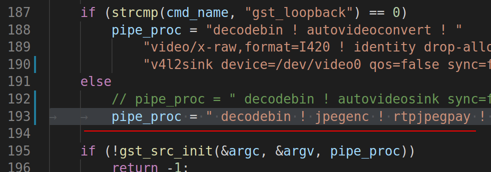
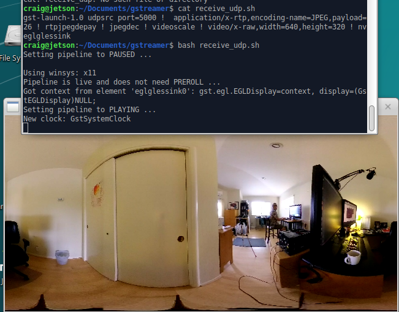
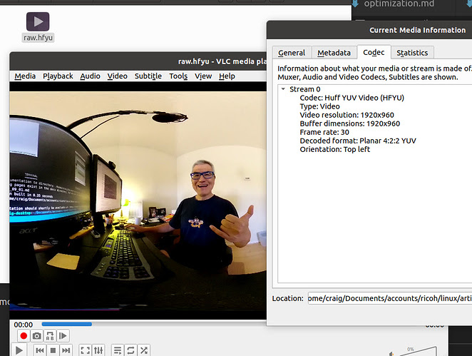

Usage Examples
stream to YouTube with ffmpeg
from Paul Gullett. post
ffmpeg -f lavfi -i anullsrc \
-f v4l2 -s 3480x1920 -r 10 -i /dev/video0 \
-vcodec libx264 -pix_fmt yuv420p -preset ultrafast \
-strict experimental -r 25 -g 20 -b:v 2500k \
-codec:a libmp3lame -ar 44100 -b:a 11025 -bufsize 512k \
-f flv rtmp://a.rtmp.youtube.com/live2/secret-key
As my knowledge of ffmpeg is weak, I simplified Paul's video pipeline.
ffmpeg -f lavfi -i anullsrc -f v4l2 -s 1920x960 -r 10 -i /dev/video2 \
-vcodec libx264 -pix_fmt yuv420p \
-b:v 2500k \
-codec:a libmp3lame -ar 44100 -b:a 11025 -bufsize 512k \
-f flv rtmp://a.rtmp.youtube.com/live2/$SECRET_KEY

stream to another computer with gstreamer
in gst_viewer.c
pipe_proc = " rtph264pay name=pay0 pt=96 ! udpsink host=127.0.0.1 port=5000 sync=false ";
with gst-rtsp-server
./test-launch "( udpsrc port=5000 ! application/x-rtp, media=(string)video, clock-rate=(int)90000, encoding-name=(string)H264 ! rtph264depay ! h264parse ! rtph264pay name=pay0 pt=96 )"
Receive on ROS.
GSCAM_CONFIG="rtspsrc location=rtspt://10.0.16.1:8554/test latency=400 drop-on-latency=true ! application/x-rtp, encoding-name=H264 ! rtph264depay ! decodebin ! queue ! videoconvert" roslaunch gscam_nodelet.launch
Simplified computer to computer streaming with rtsp and gstreamer
This was tested going from an x86 machine to a Jetson Nano. The THETA Z1 is connected to the x86 Linux machine. It is not working with the Jetson as the sender.
On x86 computer sending THETA video.
Modify the pipeline in gst_viewer.c
This example has the IP address hardcoded in. Switch to a variable in your code.
pipe_proc = " decodebin ! jpegenc ! rtpjpegpay ! udpsink host=192.168.2.100 port=5000 qos=false sync=false";

If you are looking for the IP address of the receiver, you can use arp-scan on the command line.
Example:
sudo arp-scan --interface=eth0 --localnet
On the receiving device, if the receiver is a NVIDIA Jetson Nano.
$ cat receive_udp.sh
gst-launch-1.0 udpsrc port=5000 ! application/x-rtp,encoding-name=JPEG,payload=26 ! rtpjpegdepay ! jpegdec ! videoscale ! video/x-raw,width=640,height=320 ! nveglglessink
If you're on x86, change nveglglessink to autovideosink. You may want to make the width and height bigger as well.

Save to File
Using the v4l2loopback capability and thetaV loopback example, here are 2 example gstreamer pipelines to grab the video:
As a lossless huffman encoded raw file:
gst-launch-1.0 v4l2src device=/dev/video99 ! video/x-raw,framerate=30/1 \
! videoconvert \
! videoscale \
! avenc_huffyuv \
! avimux \
! filesink location=raw.hfyu
And with default h.264 encoding on a Jetson:
gst-launch-1.0 v4l2src device=/dev/video99 ! video/x-raw,framerate=30/1 \
! nvvidconv \
! omxh264enc \
! h264parse ! matroskamux \
! filesink location=vid99.mkv
Pro tip, when you install v4l2loopback, use the video_nr option to create the video device somewhere high so it does not get displaced by PnP of other cameras.
The Huffyuv format is a large file format. VLC can play it.
Here's a shot of me playing a file that I generated with Les's pipeline.
